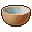
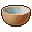
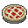
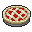
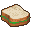
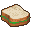

Это полное руководство по основным механикам игры. Оно поможет лучше разобраться, как правильно выжить и продержаться максимально долго.
Руквоводство будет меняться в связи с глобальными обновлениями игры. На данный момент у игры билд 41.78.16
Еда и её приготовление
Обучение основам
Использование приборов: Если вы хотите разогреть или пожарить пищу то для этого подойдут такие приборы как: Костёр, Плита, Микроволновка, гриль или камин. Для того что-бы начать использовать прибор нужно положить туда пищу и нажать кнопку включить, после чего пойдет готовка

Вот так выглядят приборы для приготовления


Один и более из этих приборов можно найти в любом жилом доме (грили находятся всегда на улице)
Посуда для готовки разных блюд:
 



В каких крафтах используется посуда:
- Форма для выпечки - ТОРТ и ПИРОГ
- Кастрюля - СУП, РИС и Спагетти
- Кастрюлька - СПАГЕТТИ и РИС
- Жаровня - ЖАРКОЕ
- Скалка - ЗАГОТОВКА ДЛЯ ПИРОГА
- Кружка - НАПИТКИ
- Миска - СУП, СПАГЕТТИ, РАГУ, РИС, ОВСЯНКА, БОБЫ, ОВСЯНКА, СУХОЙ ЗАВТРАК
- Сковорода - ЖАРКОЕ
- Чайник - Напитки
- Нож (любой) - Нарезка хлеба и торта


 


 



Маринование пищи
Для маринования овощей вам потребуется БАНКА и КРЫШКА Данные предметы можно найти на кухнях в гарнитурах и в гаражах Так-же вам могут встретится коробки с банками и крышками которые вы можете распаковать через меню крафтов.
Кроме банки и крышки нам потребуется УКСУС и САХАР которые вы можете найти на кухне в гарнитуре, для каждого крафта используется по 2 еденицы сахара и уксуса Что-бы использовать 10 едениц воды в крафте вам понадобится бутылка с водой либо другая емкость с питьевой водой. (Полной бутылки уксуса и пачки сахара хватит примерно на 6-7 маринадов)
Крышка
Банка

Уксус

Сахар
Вы можете мариновать такие овощи как: ТОМАТ, КАРТОШКА, БАКЛАЖАН, ЛУК-ПОРЕЙ, КАПУСТА, БРОКОЛИ, МОРКОВЬ, РЕДИС, СЛАДКИЙ ПЕРЕЦ.
Все актуальные крафты маринованной пищи:

Полной бутылки уксуса и пачки сахара хватит примерно на 6-7 маринадов
ВНИМАНИЕ! Маринады нужно хранить в не холодном месте, с
плюсовой температурой
Расход сытости ингредиентов
Это то количество пищи, которое идет в блюдо
| Ингридиент | Суп | Рагу | Салат | Жаркое | Жаренные овощи | Сэндвич | Бутерброд | Пирог |
|---|---|---|---|---|---|---|---|---|
| Бекон | - | 15 | - | 15 | 15 | 10 | 15 | 15 |
| Ломтики бекона | - | 5 | 5 | 5 | 5 | 5 | 5 | 5 |
| Кусочки бекона | - | 3 | 3 | 3 | 3 | 3 | 3 | 3 |
| Вяленое мясо | - | 15 | 5 | 15 | 15 | 5 | - | - |
| Курица | 15 | 15 | 10 | 15 | 10 | 5 | 10 | 10 |
| Филе рыбы | 15 | 15 | 10 | 15 | 10 | 5 | 10 | 15 |
| Ветчина | - | - | 10 | - | - | 10 | 10 | - |
| Котлета | - | 15 | - | - | - | - | 10 | 15 |
| Баранья отбивная | 15 | 15 | 10 | 15 | 15 | 5 | 10 | 15 |
| Свиная отбивная | 15 | 15 | 10 | 15 | 15 | 5 | 10 | 15 |
| Мясо кролика | 15 | 15 | 10 | 15 | 15 | 5 | 10 | 15 |
| Лосось | 15 | 15 | 10 | 15 | 15 | 5 | - | 15 |
| Мясо маленького животного | 15 | 15 | 10 | 15 | 15 | 5 | 10 | 15 |
| Мясо маленькой птицы | 15 | 15 | 10 | 15 | 15 | 5 | 10 | 15 |
| Стейк | - | 15 | - | 15 | 15 | - | 15 | - |
| Ингредиент | Суп | Рагу | Салат | Жаркое | Жаренные овощи | Сэндвич | Бутерброд | Пирог | Торт |
|---|---|---|---|---|---|---|---|---|---|
| Хлеб | 5 | 5 | 5 | - | - | - | - | - | - |
| Масло | - | - | - | - | - | 10 | - | - | - |
| Сыр | 15 | - | 5 | - | - | 5 | 5 | - | - |
| Шоколад | - | - | - | - | - | - | - | - | 10 |
| Яйцо | - | - | 10 | 10 | 10 | 10 | 10 | - | - |
| Соленья | - | - | 5 | - | - | 5 | 5 | - | - |
| Сухая лапша | 15 | - | - | 15 | - | - | - | - | - |
| Тофу | 10 | 10 | 10 | 10 | - | - | 10 | - | - |
| Ингредиент | Суп | Рагу | Салат | Жаркое | Жаренные овощи | Сэндвич | Бутерброд | Пирог |
|---|---|---|---|---|---|---|---|---|
| Авакадо | 8 | 8 | 8 | 8 | 8 | 8 | - | 8 |
| Сладкий перец | 15 | - | 10 | 15 | 15 | 5 | 5 | 15 |
| Брокколи | 15 | 15 | 10 | 15 | 15 | - | - | 15 |
| Капуста | 10 | 10 | 10 | 10 | 10 | 5 | 10 | 10 |
| Морковь | 15 | 15 | 10 | 15 | 15 | 5 | - | 15 |
| Баклажан | 15 | 15 | 10 | 15 | 15 | 5 | - | 15 |
| Лук-порей | 15 | 15 | 10 | 15 | 15 | - | - | 15 |
| Салат-латук | - | - | 5 | - | - | 5 | 5 | - |
| Лук | 15 | 15 | 10 | 15 | 15 | 5 | 10 | 15 |
| Горох | 10 | 10 | - | 10 | 10 | - | - | - |
| Картофель | 15 | 15 | 10 | 15 | 15 | - | - | 15 |
| Томат | 10 | 10 | 10 | 10 | 10 | 5 | 10 | 10 |
| Цукини | 8 | 8 | 8 | 8 | 8 | - | - | 8 |
| Грибы | 3-4 | 3-4 | 3-4 | - | 3-4 | 3-4 | - | 3-4 |
| Ингредиент | Суп | Рагу | Салат | Жаркое | Жаренные овощи | Сэндвич | Бутерброд | Пирог |
|---|---|---|---|---|---|---|---|---|
| Кетчуп | - | - | - | - | - | 2 | 2 | - |
| Майонез | - | - | 2 | - | - | 2 | 2 | - |
| Горчица | - | - | 2 | - | - | 2 | 2 | - |
| Сладкий перец | 1 | 1 | 1 | 1 | 1 | - | 1 | 1 |
| Соль | 1 | 1 | 1 | 1 | 1 | - | 1 | 1 |
| Ингредиент | Торт |
|---|---|
| Яблоко | 8 |
| Банан | 10 |
| Ежевика | 2 |
| Черника | 2 |
| Виноград | 8 |
| Дикие ягоды | 1-2 |
| Лимон | 8 |
| Апельсин | 8 |
| Персик | 8 |
| Клубника | 5 |
| Ананас | 8 |
Хлеб
Для приготовления хлеба, вам нужно найти и прочитать журнал "Поварёнок выпуск 2"
Главное что нужно для крафта это тесто для хлеба, крафт теста для хлеба:
Далее тесто для хлеба нужно положить в любой прибор для его приготовления
Так-же хлеб можно нарезать и использовать его в приготовлении бутерброда и бургера
Бургер и сэндвич
Эффекты этого блюда зависят от того какие ингредиенты вы в них добавите. Бургер и Сэндвич отличаются лишь
ингредиентами которые вы можете добавить в них. Бургер найденный в ресторанах или кухнях дает -25 к голоду
и -10 к несчастью
Сэндвич и Бургер могут вместить в себя максимум 4 ингредиента включая специи.
Кусочки хлеба вы можете достать нарезав хлеб ножом
Для приготовления хлеба, вам нужно найти и прочитать журнал "Поварёнок выпуск 2"
Главное что нужно для крафта это тесто для хлеба, крафт теста для хлеба:
Далее тесто для хлеба нужно положить в любой прибор для его приготовления
Так-же хлеб можно нарезать и использовать его в приготовлении бутерброда и бургера
Бургер и сэндвич
Эффекты этого блюда зависят от того какие ингредиенты вы в них добавите. Бургер и Сэндвич отличаются лишь ингредиентами которые вы можете добавить в них. Бургер найденный в ресторанах или кухнях дает -25 к голоду и -10 к несчастью Сэндвич и Бургер могут вместить в себя максимум 4 ингредиента включая специи. Кусочки хлеба вы можете достать нарезав хлеб ножом